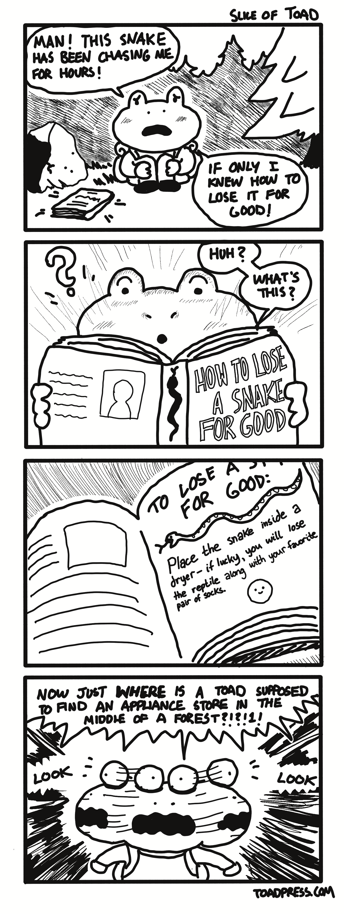

reading is
breathing.
reading is
breathing.
|
toad press
tariq's online (almost) daily press
a small personal site that shares human vibes. 08-02-2026-SUN version
|

Slice of Toad #2: A Joke Book |


|
Friday’s Entry 07/31/2026Today is the last day of July, tomorrow will be the first day of August. As an adult, I feel like sometimes dates just don’t mean as much as when you’re younger. When I was a kid, this date would likely have inflicted some sense of slight sadness due to the diminishing days of Summer vacation. Summer vacation was such a formative time. Every year seemed to have a different color or taste or feeling associated with the time period, but each time was equally important. I remember how days would pass so slowly and two months seemed like such a long bank of time, until it was the night before the first day of school. Looking back, I am so fond of the time I had to bike, run barefoot in the backyard, water our garden while my parents were at work, read books underneath the living room window air conditioner, and play lots and lots of video games. It’s so strange how, by the end of the break, I returned to school feeling like everyone, including myself, aged so much. I miss those days. I miss the unlimited free time I had and how I used that time to satisfy whatever fascinations swarmed in my mind. In writing this, I suppose I also miss the actual time of those days. I miss counting the days and knowing the dates and understanding how many more days of ‘freedom’ I had before having to return to structure. Keeping a daily journal has been helping me to slow down and separate one day from another. It’s a physical reminder that each day has its own importance, even if ‘nothing’ happens. Before journaling, whenever I would sit to reflect on a recent period of time, be it a week or a month or even months, it was hard for me to delineate certain days from other days. Everything was an amorphous amalgamation of a singular, unending day. By taking time to reflect each day, even if it is to write: ate some watermelon today, crisp and cold, like the underside of a pillow on a warm Summer night, it immediately gives that day some meaning. And from that meaning, there is memory and remembrance. Tomorrow is the first day of August, and Summer is still long from being done, but knowing is half the battle. Taking a pause to look at the calendar and use it as a lens to see every day as a different color or taste or feeling makes our days that much more alive. We are here for a short time, our days of Summer vacations are largely gone, but that doesn’t mean we can’t have a living, breathing season of memories. And, without much need for explanation, eat lots of watermelon, seeds and all. -Tariq |
|
|
Wednesday’s Entry 07/29/2026Yesterday I was driving home from the park and I queued up my spotify liked songs, hit shuffle and let it play. The first song that played was one I hadn’t heard in quite some time but, without skipping a beat, my mind knew exactly which song I was listening to and it also knew exactly which memory was most strongly associated with it. And the memory of it all is the funniest part, because the song is called, well, “Memory.” In particular, it is Memory by Toby Fox, from the Undertale soundtrack. A beautifully simple yet cathartic tune that instantly captures the humanity intended by the composer, hidden behind chiming bells and among, hopefully, vibrant recollections of time spent in the underground. Undertale was a revelatory experience for almost everyone who took the time to play it, and enough has been said about why. What I will say is this - it is a game which was developed by someone from my generation, around the same age as me, who poured his interests and curiosities into a clever work of art that ultimately resonated instantaneously with anyone who grew up during the 1990s and 2000s. I logged into my Steam account, which has been a long time coming (my last played game was Borderlands 3 in 2021) and clicked on Undertale in my library. I played 19.3 hours and it was last played on March 14, 2016. Well, that changed today. I re-downloaded it and booted the game up. The familiar “Falling Down” track brought me back to 2015, when I first purchased the game. Back then, I was in the trenches of a “gap year.” I had graduated from my undergraduate university with a Bachelor’s of Arts degree, but I graduated late (September) and was nudged into taking a year off before starting my doctorate program which began, as it did every year, in August. I was a month off, a little too late, and not entirely on top of things. Such was the rhythm of my life during my early 20s. In fact, I graduated late because I was negligent of a foreign language requirement for my university; I thought I only needed one year, turns out I needed two years. Go figure! Between the years of 2010 and 2015 - college years - I found myself always playing catch up or falling behind while others seemed to have their lives figured out. I really only made one good friend in my undergraduate study, and this friend had their whole four years planned out semester to semester - all the extracurriculars and volunteer opportunities all neatly placed within cells on their excel file titled “The Master Plan.xls.” My computer had no such excel sheet. Instead, it was filled with burned CDs of my favorite video game and anime sound tracks, finished and unfinished screenplays for short films to be shot with my high school friends, and lots and lots of downloaded indie video games. While I attended my classes and completed my assignments, my mind was very much elsewhere, dreaming of how I could pursue a creative endeavor and follow its path towards a life of making art. I felt like an outsider trying to survive in a busy university where most people around me had their plans set. I reluctantly agreed to my parents’ plea to pursue a career in medicine but my heart and soul was still attached to the movies and the games and the illustrations and the art of life. My classmates in study groups were slowly building their resumes to be as competitive as possible for medical school. I was just simply okay with anything that might work if it meant I could eliminate the worry of real life for the 4-5 years of undergraduate study so my mind would be free to wander. It’s a surprise I made it to the end of my studies with a concrete, albeit poorly timed, next step. Cut to my graduation, September 2015. I should paint a full picture for you: I didn’t actually attend graduation. My diploma arrived in a thick envelope in the mail. I opened it to show it to my parents and brothers, as I was back to living at home, and received some congratulations before putting it back in the envelope. September 2015 is also when Undertale was released, but I didn’t purchase it then. Sometime in September or October, I injured myself in the gym. A trip to urgent care and then another trip to the hospital, as well as some outpatient clinic follow up appointments rendered me in a situation where I was largely resting in a bed. Day in. Day out. People my age were moving on to jobs or further education. I was at home, sitting around, doing nothing other than sitting with my thoughts. Oftentimes I thought about how my lack of initiative in college placed me in a holding pattern for the year. I tried to use this time to return to creative pursuits but soon that, too, faded. A darkness and a sadness set in during this time period. It visited me every day, around the same time, and remained for several months. Well, great job on my part! When I set out to write this mini essay, I thought it would be a short collection of happy thoughts associated with the chance occurrence of an Undertale song appearing on my playlist. How did we get to this trough? Hopefully the background helps to illustrate who I was during that time. A kid, born in 1992, who grew up in a weird time in America. Post-9/11, financial crisis rendering parents unemployed, unimaginable technological advances, the rapid blooming of the internet and connectivity as a whole. But, behind it all, was a kid who also grew up playing Nintendo, and scrounging GameStop for the cheapest and best used RPGs I could find. I was a kid who aggregated all of my allowance money with my brothers and we bought RPG Maker on the PlayStation and took turns trying to build our own games, which never really worked. I was a kid who wondered who Ness was after playing Super Smash Bros. Melee and, once I had access to a computer with internet a few years later, learned how to download a ROM of Earthbound. I was a kid with hopes. I was a kid with dreams. My injury took time to heal but by mid December I was physically feeling much better. I didn’t have much money at the time, but when the annual Steam Winter Sale rolled around, I noticed that Undertale was on sale and I convinced myself to spend $7.99 on the discounted game (discounted from $9.99. I hadn’t heard much about the game other than it had built popularity over a few months. I downloaded it and booted it up. Falling Down began playing. Today, I played through the tutorial in the Ruins and realized I forgot a lot about the game. Even though I played 19 hours over the course of three months back in the winter of ‘15-’16, I forgot that puzzles were a big component of the game. What I do remember is the humor, the art, and the wonderful music. I remember the difficulty of the game and my joy at completing it while sparing all monsters. I remember playing the game on my brother’s gaming PC, in our shared room cluttered with unfolded clothes, video games, snacks and bottles of water. I remember being in a liminal period of my life, unsure how I reached where I was, unsure of what lay ahead for me. When I last played the game, in March of 2016, I moved on with my life. I didn’t actually learn about the incredibly deep and complex web of fandom the game sprouted until years later, in 2021, when I watched a video essay by Super Eyepatch Wolf detailing “what the internet did to Undertale.” I never played Deltarune and I never went back to play Undertale. Until today. In reality, I don’t think my experience was very special or exceptional. I believe most people had similar experiences and hearing Memory play without expectation perfectly represents that, well, memory. It is something so slight and so beautiful, it instantly fills the listener with hope and determination. It fills the listener with those memories, now ten years old, of the first time they played that quirky, amazing game. Somewhere between when I played Undertale for the first time and now, I figured my life out. I went to my doctorate program and then residency, met my wife, got married, and had my first child. It is honestly so crazy to think this has all happened in the ten years since the game was released. And, although there are times I can point to when I feel like I am still playing catch up, or always a step behind, there are even more times I can happily wave like a flag and exclaim, “I did this! And I meant to do this!” Thinking back to the game, and the nature of your choices as the player and your ability to affect the world, there is a surprising and content wisdom that, regardless of where you are in life, be it at the very top or after falling down a dark hole in a mountain, it is still truly you that can make your own decisions and change the course of both your life but the lives of all those around you. So, here’s to another playthrough. And here’s to chance encounters in life leading to delightful remembrances and even more delightful new memories. And, despite everything, it is, of course, still you. - Tariq |